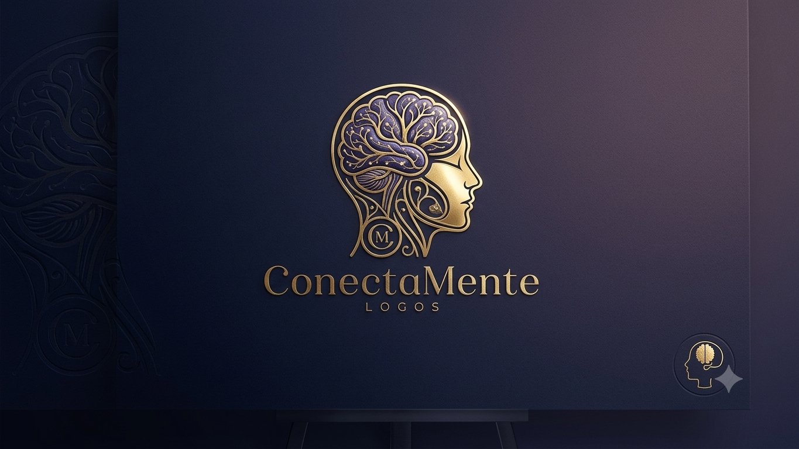

A ConectaMente Logos integra neurociência, saúde mental, comunicação estratégica e inclusão para fortalecer pessoas, lideranças e organizações.
Solicitar Diagnóstico EstratégicoA ConectaMente Logos nasce da conexão entre ciência, comunicação e cuidado humano. Desenvolvemos soluções voltadas à saúde mental organizacional, ao fortalecimento das relações de trabalho e à construção de ambientes mais saudáveis, inclusivos e sustentáveis. Nossa atuação integra conhecimentos da neurociência, psicologia, comunicação institucional e desenvolvimento humano para transformar desafios organizacionais em oportunidades de crescimento.
Promover ambientes de trabalho mais saudáveis e humanos, utilizando ciência, comunicação estratégica e inclusão como ferramentas de transformação organizacional.
Ser referência em soluções integradas de saúde mental organizacional, contribuindo para organizações mais conscientes, produtivas e sustentáveis.
Humanização, ciência, inovação, inclusão, ética, responsabilidade e transformação social.
Muitos fatores que impactam os resultados de uma empresa não aparecem imediatamente nos indicadores financeiros. Eles começam nas relações, no comportamento e na saúde emocional das equipes.
A saída frequente de colaboradores pode revelar desafios relacionados à cultura, liderança, clima e pertencimento.
Faltas, afastamentos e redução da presença podem estar relacionados ao desgaste físico e emocional.
O colaborador está presente, mas enfrenta dificuldades de concentração, motivação e produtividade.
A perda de conexão com o propósito da organização impacta equipes e resultados.
Relações fragilizadas e comunicação inadequada podem comprometer o ambiente de trabalho.
Fatores relacionados ao estresse, sobrecarga emocional e bem-estar dos profissionais.
Identificação dos fatores humanos e organizacionais que impactam equipes e resultados.
Estratégias para promover bem-estar, prevenção e desenvolvimento das equipes.
Conhecimento científico aplicado ao comportamento, liderança e tomada de decisão.
Fortalecimento da cultura, pertencimento e relações dentro das organizações.
Descubra os fatores invisíveis que impactam sua equipe, o clima organizacional e os resultados da sua empresa.
WhatsApp: (48) 98837-5829
E-mail: conectamentelogos@gmail.com
Instagram: @conectamentelogos.br
Santa Catarina - Brasil